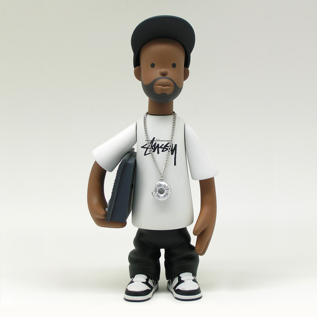
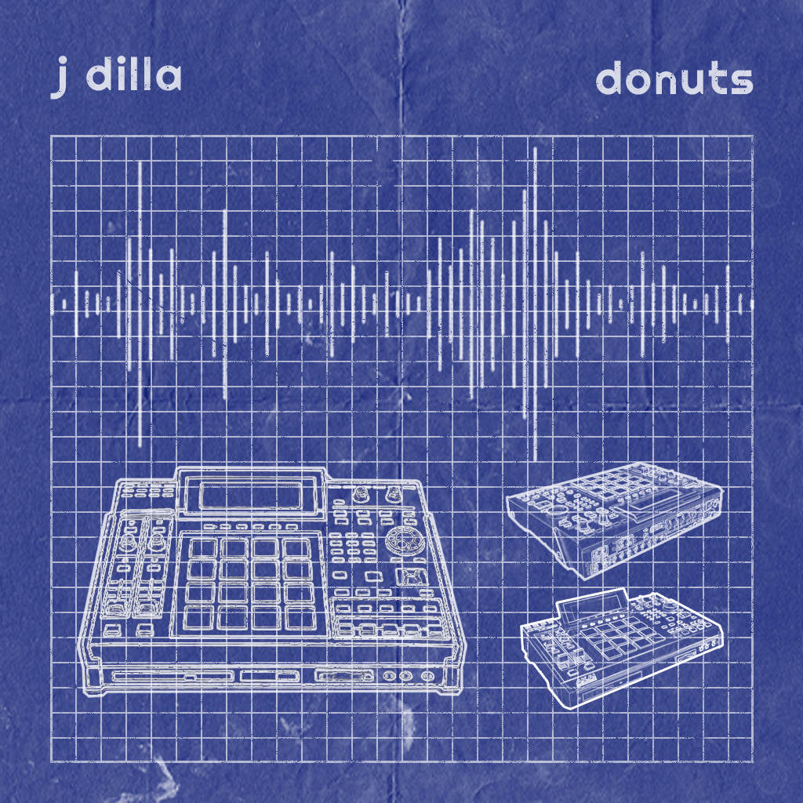
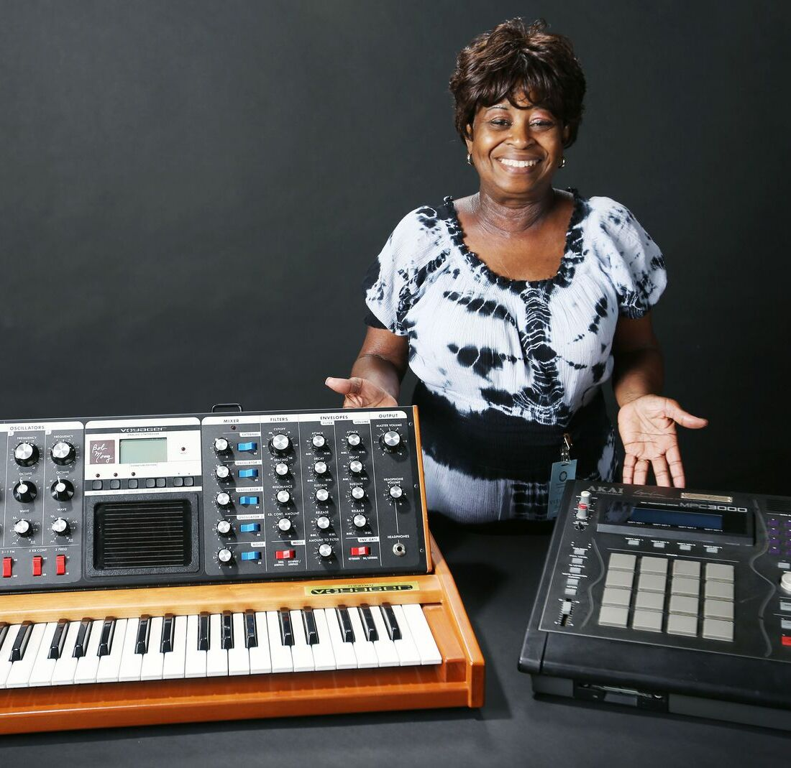
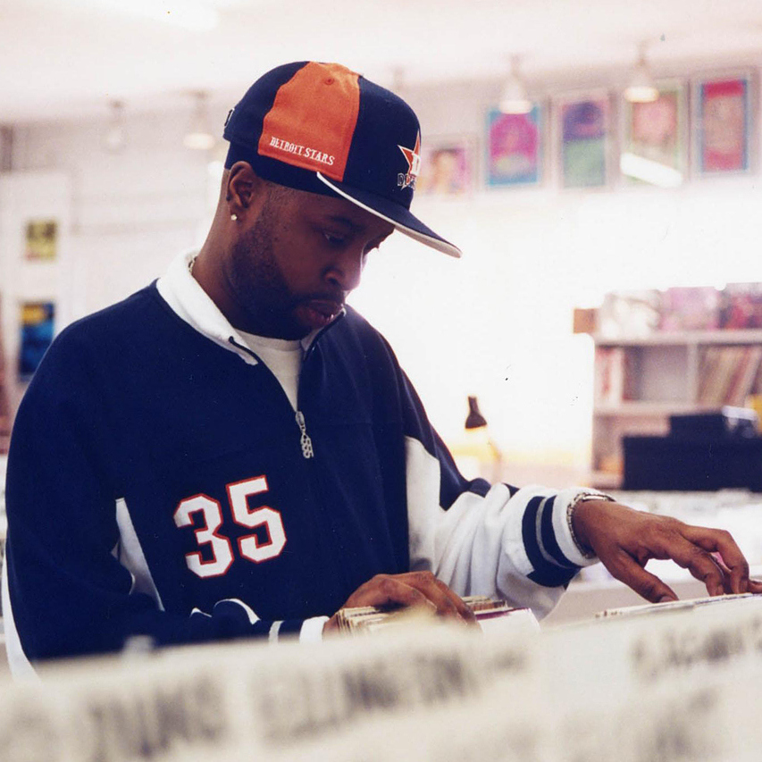
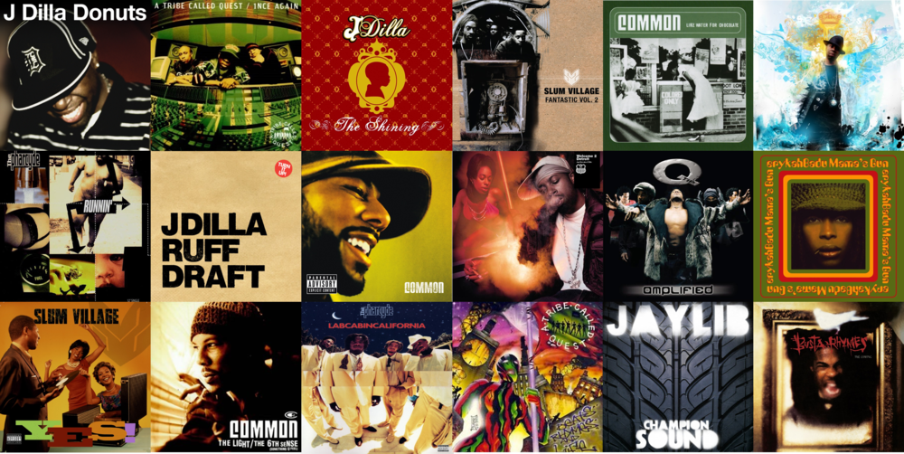
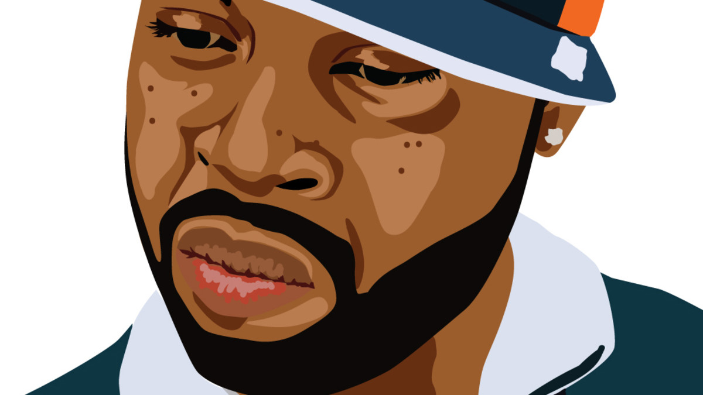

Dilla Illustration

Dilla Action Figure

The typical MPC used in production
.png)
Cover of Donuts

Dilla's Mother with his Moog Synth and MPC

Dilla crate digging
James Yancey, or as most people know him, J-Dilla, was a legendary hip-hop producer and is widely regarded as one of the greatest hip-hop producers of all time. Born and raised in Detroit, Dilla from a young age was involved in music. He took up a number of different instruments and eventually got his hands on an MPC. The MPC is drum machine and is used a ton in sample based music. Dilla always collected records and would use these records from his collection in his music. By the time Dilla was in high school he had formed the collective Slum Village which would begin his professional recording career. Throughout the 90s he would work with some of the biggest hip-hop acts including Busta Rhymes, De La Soul, and Q-tip of A Tribe Called Quest. Along with producing for others Dilla would release a number of solo albums as well. Unfortunately Dilla passed in 2006 due to a blood disease that would cause a number of different health complications. He died three days after the release of Donuts his final album.

J-Dilla released a number of albums during his lifetime and has had a number of posthumous releases as well. His most popular release is Donuts, the album he released 3 days before his death. This is widely considered his best album and most influential, as it inspired a number of different artists to just release beat tapes rather than albums. Another notable release is Champion Sound, which was a collaboration between Dilla and Madlib another infamous producer. This is said to be Madlib's greatest collab besides the infamous Madvillany collab with MF DOOM. Fantastic Volume 2, was another popular release from Dilla. This was one of his earlier releases and contains some of his most loved songs inclucing ", Fall in Love."

Dilla is said to be one of the most influential hip-hop artists of all time. He helped jump-start a number of different artists careers including the likes of Erykah Badu. Additionally, he contributed to many already estblished artists in creating some of their best projects. He also inspired a number of lo-fi hip-hop artists and is even credited with created the genre. Additionally, his music has inspired a number of different jazz artists and also inspired a sub-genre of jazz called Dilla-beats.



